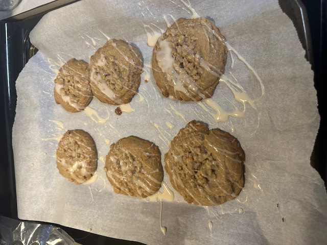

Coffee Cake Cookie

Description
Mallory from the palatable life
has made a wonderful recipe based off of Gilmore Girls. This recipe is recommended by an excellent baker, my
girlfriend.
This cookie has a soft cinnamon dough base. The streusel and icing in top add additional texture and and flavor
and give it the similarities to coffee cake.
if this is not your thing Click Here.
Ingredients
Cinnamon Dough
- 1/2 cup of butter
- 1/2 cup of vegetable oil
- 1 cup of brown sugar
- 1 egg
- 1 tsp of vanilla
- 2 tsp of cinnamon
- 1/2 tsp of baking soda
- 1/2 tsp of baking powder
- 1/2 tsp of salt
- 2 1/2 cups of flour
Streusel
- 1/4 cup of butter
- 1/4 cup of brown sugar
- 1/3 - 1/2 cup of flower
- 1/2 tsp of cinnamon
- pinch of salt
Icing
- 1/2 cup of powdered sugar
- 1 tbsp of milk
- splash of vanilla
Recipe
- Preheat the oven to 350 degree.
- Mix butter, oil, sugar until smooth.
- Add the egg and vanilla and mix.
- Add remaining ingredients and mix.
- To make streusel, combine all ingredients in bowl.
- Should be sticky but crumble when ran through your fingers
- add 1 tbsp of flour until it crumbles.
- scoop 1/4 cup of the cookie dough an put on cookie sheet. indent with fingers and add scoop on top.
- Bake at 350 for 10-12 minutes.
- To make the frosting, combine the sugar, milk, and vanilla in a small bowl and wisk till smooth and runny.
- To finish, drizzle icing into the cookies and enjoy!
Home